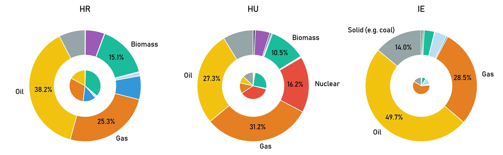
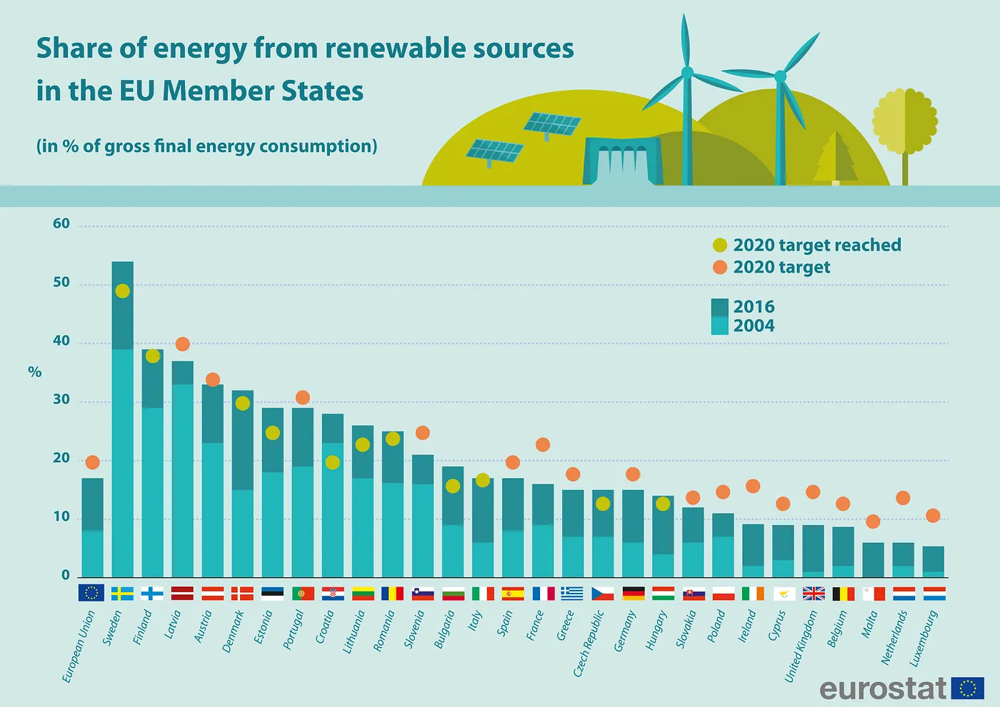
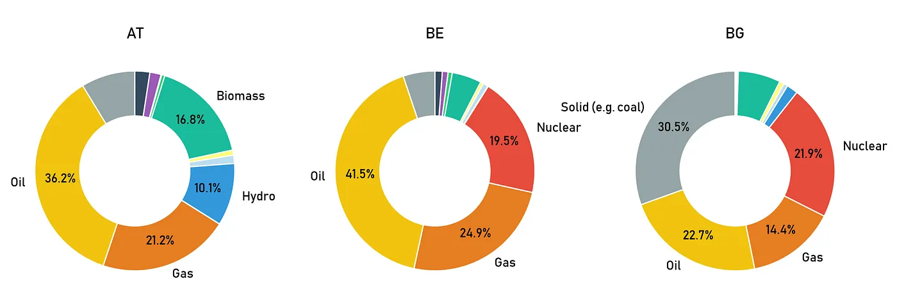
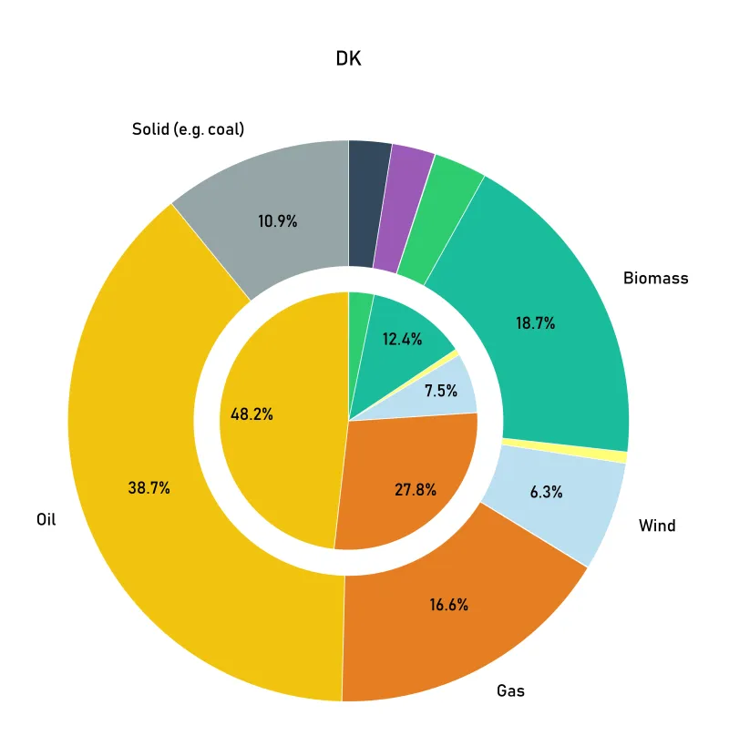
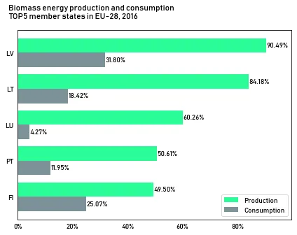
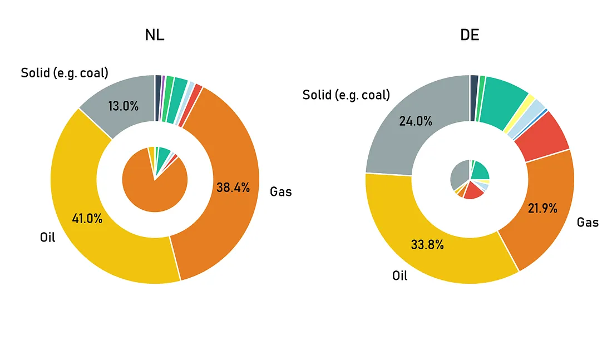
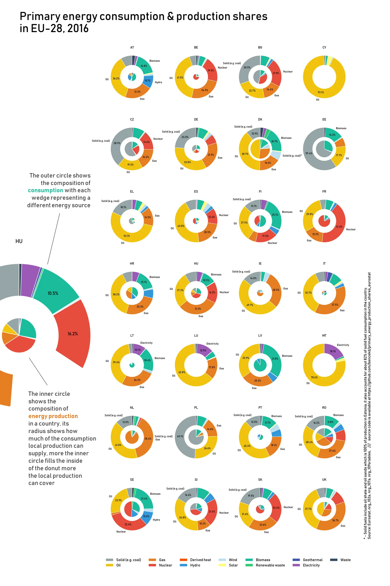

EU-28 Energy structures cheat sheet
Originally published in November 2018 on Medium
To what degree local energy production can fulfill local demand in the EU? Which countries are the “greenest” in energy terms and what does Latvia do for a nearly 40% renewable energy ratio? Debunking “myths” and the creation of a printable cheat sheet.

A part of the cheat sheet, if you want to know how to read the figures read on or scroll to the end
While in the recent years I have been working as an IT consultant / project manager / something of a data scientist / engineer I have recently switched jobs and went back — so to say — my original area of studies: Economics. So a few months ago I have begun to take a deep dive into energy economics. I had some exposure to this field before, but not too much, thus I had to read a lot and discovered new things.
In this period, my focus was particularly on news and data which said something about how the structure of energy production and consumption¹ looks in the EU. Then these figures from Eurostat came in my way:

Energy from renewable sources, 2016, source: Eurostat
It shows what part of consumed energy is coming from renewable sources in the EU-28 member states.
I was dazzled. I quickly realized that my overall picture of energy structure in Europe needs updating. Parts of it went against my (severely prejudiced²) intuition. I was under the impression that Romania or Croatia would be further down the list³, and how come that the Netherlands and even Germany is that much behind?
That is when I went to Eurostat to find some answers.
I wanted to create a reference which will help me to 1) understand energy structures in the member states, 2) act as a kind of cheatsheet whenever I need to work with energy data for a given country. I also needed it to have a detailed breakdown of renewable energy sources (RES) as they can mean quite different things — as we will see.
Eurostat has a nice and detailed account energy trade, production and consumption in an annual and a monthly format. It is free and open and — this is the best part — they offer API access to a large part of the data tables (here). And, while I believe with R it is super easy to access Eurostat data, the process is still quite reasonable and quick with Python too.
For retrieving the data I have used the API through a package called jsonstat.py, however this package seems to be abandoned and had some conflicts with the current Eurostat format so I had to make some minor changes to its code. The working version can be found here.
Getting and processing the data was quite fast thanks to these tools. I have used three tables:
- Simplified energy balances — annual data (nrg_100a)
- Supply, transformation and consumption of renewable energies — annual data (nrg_107a)
- Primary production — all products — annual data (nrg_109a)
Production is production, while the other two are needed to calculate consumption. Nrg_100a gives an overview and nrg_107a enables us to go into details for the RES.
After transforming the data and plotting the first version I have realized that my figures were different from what has been published by Eurostat. That is a bit menacing, right? So I have sent an enquiry to Eurostat which was quickly followed up with an answer (they responded in less than two days). I failed to account for energy exports which are counted towards the sum as negative values. So fixing that… and… we supposedly have the dataset that is needed for the plot.
As for the plot: I wanted to represent a fair amount of information:
- ratio between local energy production and consumption
- composition of energy consumption
- composition of energy production
- breakdown of RES shares
For that I came up with a conventional idea. While there is an ongoing witch hunt for pie charts we are somehow overly clement with donut charts. Actually there are studies which stand up for the merit of pie charts. So I decided to represent the consumption composition in a series of donut charts with the RES categories already broken down to their own smaller categories (hydro, biomass, solar, etc.).

Energy consumption in EU countries, 2016, first version, Data: Eurostat
But I still needed to represent the relationship between domestic production and consumption and also to show what is the composition of domestic production. I quickly realized that in this aspect the question is not really the exact ratio of domestic product against consumption, but rather a more general notion: can it support at least some of the demand? Or could it support nearly all the demand?

And there is Denmark…, Energy consumption and production in Denmark, 2016, Data: Eurostat
Therefore I chose putting a pie chart inside the donut. I have to admit that there are studies that will tell you that we recognize / compare a lot of things more accurately than area size, but just as I said, here accuracy is not a high priority in the visualisation. The size of the pie chart in relation to the donut’s insides show how much of the domestic consumption can be supplied by domestic production. And here it is only needed to be on the scale of: 1) none, 2) some, 3) we could get by on our own for some time, 4) Denmark.
As for some of the questions that I brought up in the beginning:

Energy production and consumption from biomass, 2016, Data: Eurostat
1.
Many of the countries, that I have mentioned as less developed but still with having a large share of RES, have high shares of biomass in their energy mix: Romania has about 12%, while Croatia has more than 15%. That is also the case for Latvia, where the RES share is over 30%. Most of it (over 31%) is comes from biomass use. Biomass energy can be derived from multiple things: burning of plant, animal or even human waste. And while the burning of biomass releases carbon emissions it is considered as RES as its source stocks (plant/animal/human) can be replaced with new growth. It currently gives about 64% of the EU’s total renewable energy. Amid concerns of the possibility of this classification leading to increasing deforestation, which in turn could lead to a decrease in the capacity to absorb carbon emissions.

Consumption and production structure of the Netherlands and Germany, 2016, Data: Eurostat
2.
The Netherlands and Germany actually have energy structures which — on the consumption side — are largely dependent on fossil fuels. In Germany the share of renewables in consumption is around 12%, while in the Netherlands it is only about 5%. Furthermore Germany is dependent on imports for its energy needs. According to the Eurostat data domestic production covers only about 35% of gross inland consumption. That is why Germany is a sizeable importer of fuels such as oil and gas. The Dutch supply much more of their own needs — the ratio is close to 60% — thanks to their gas fields. However production at these are in jeopardy after gas extraction at their largest field was linked to a number of earthquakes.
Below are the generated charts for all EU member states. It fits perfectly on a A4 sheet and I am already using it as a cheat sheet.

Data processing and the code of the visualisation is available alongside with some supporting files at: https://github.com/bencekd/primary_energy_production_shares_eurostat1 — Energy here means energy. Not just electricity and not just heating. It includes energy consumption by the energy sector, energy losses, statistical corrections and final energy consumption, which covers a lot of things. Among others it includes transportation, agricultural use or private heating (and a lot more). Therefore these energy balances also include e.g. petrol consumption.
2 — But that is why we analyse data, right? To get rid of these mistaken prejudices.
3 — For this suggestion you probably will not even need Eurostat though, just a bit of thinking: less developed countries could easily have a less developed industry, which in turn could mean less energy consumption. Taking into account that a sizeable part of the European industry built on fossil fuels it is easy to reach the conclusion that what actually would be surprising if the less developed countries would have a higher rate of fossil consumption.